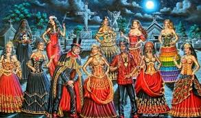

Quimbanda e seus internos
É conceito religioso afro-brasileiro com raízes na mitologia Bantu,ainda controverso quanto a sua real definição na atualidade. Por vezes, é classificada como uma religião autônoma, e por vezes como uma Linha de Trabalho (Linha de Esquerda) da Umbanda e do Candomblé, ou seja, uma modalidade de atuação e conhecimento do mundo astral e espiritual onde Umbandistas têm a possibilidade de fazer o uso da magia e feitiços para atingir os objetivos, seja práticos, seja objetivos de evolução espiritual pregados pelo culto aos Orixás.
Suas entidades, conhecidas como "Povo da Rua", dividem-se entre Exus (masculinos) e Pombagiras (femininas), os ambos mensageiros e guardiões, que vibram nas matas, cemitérios, encruzilhadas, etc.

Exú
O Exu é um Orixá trabalhor, defensor e conhecido como o mensageiro e o Guardião dos terreiros, das aldeias, das cidades, das casas, do axé e do comportamento humano. Além disso, ele representa a comunicação, a paciência, a ordem e a disciplina.
Pombogira
É uma entidade do candomblé e da umbanda, representada por uma mulher sensual, independente e dominadora, incorporada por um ou uma médium. Ela faz trabalhos espirituais que vão desde conselhos sobre problemas cotidianos até promessas de recuperar um amor.
A pombagira surgiu no início do século 20, simbolizando uma mulher liberada da submissão e do recato impostos ao sexo feminino por uma sociedade machista e patriarcal.
Zé Pilintra
O Zé Pelintra também é comumente incorporado em terreiros de Umbanda, tendo seu culto difundido em todo o Brasil. Nessa religião, é considerado parte da linha de trabalho dos malandros. O Zé Pelintra é uma das mais importantes entidades de cultos afro-brasileiros, especialmente entre os umbandistas. É considerado o espírito patrono dos bares, locais de jogo e sarjetas, embora não alinhado com entidades de cunho negativo, é uma espécie de transcrição arquetípica do "malandro". Exatamente por isso, serve igualmente como um arquétipo da cultura de origem africana enquanto alvo de preconceito. No seu modo de vestir, divergem-se algumas formas do típico Zé Pelintra: na mais comum, é representado trajando terno completo de linho S-120,na cor branca, sapatos bicolor, gravata grená ou vermelha e chapéu panamá de fita vermelha ou preta. Sua roupa assemelha-se aos "zoot suit",usada nos Estados Unidos por negros e latinos nas década de 1930 e 1940.
.jpeg)
.jpeg)
.jpeg)